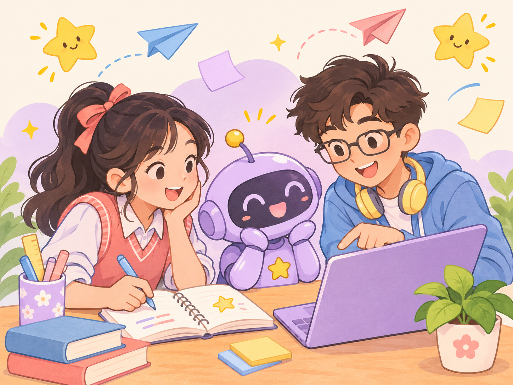

CLB AI K6-8
Hành trình AI
của em.
Ôn lại những điều đã khám phá, rồi kể câu chuyện học AI theo cách của em.

KHỞI ĐỘNG
Cùng ôn lại nhé!
Chọn đáp án cho từng câu. Khi hoàn thành, xem lời giải thích và thử lại những câu em còn băn khoăn.
✨ 18 câu hỏiĐã chọn 0/18 câu
THƯ VIỆN BÀI HỌC
Xem lại bài đã học
Mở bài giảng để tìm lại kiến thức và những hoạt động em đã trải nghiệm.
KHÁM PHÁ LẠI
Các hoạt động trực tuyến
Chọn hoạt động em muốn xem lại. Một số trang có giao diện tiếng Anh.
ĐẾN LƯỢT EM
Báo cáo của em
Em chọn hoạt động mình đã tham gia, viết theo trải nghiệm và thêm hình ảnh nếu có.
Bài được lưu trên trình duyệt này.Hãy lưu PDF khi hoàn thành để giữ hoặc gửi bài.